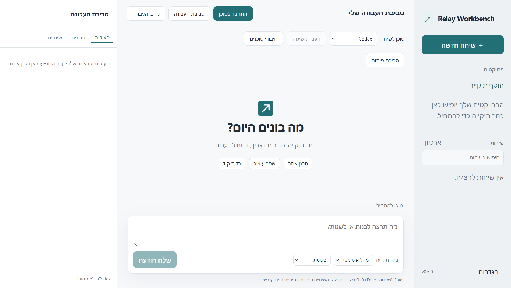

קוד פתוח. סביבת עבודה עצמאית.
הקוד שלך. הסוכנים שלך.סביבת עבודה אחת.
מקום אחד לשיחה עם סוכני קוד, לעריכת קבצים ולבדיקת השינויים. בחר את הסוכן שמתאים למשימה — והמשך עם אחר כשהעבודה דורשת את זה.
גרסת פיתוח 0.6.0/Windows 10/11 · x64/MIT/ממשק עברי

הכלים שלך, לבחירתך
בחר סוכן לכל שיחה. לכל ספק נשארים החשבון, המודלים וההרשאות שלו.
- Codex
- Claude
- Antigravity
- OpenCode
- Cline
- Copilot
- Gemini
אפשר לחבר גם סוכן ACP מקומי. כלי הספקים והחשבונות מותקנים ומוגדרים בנפרד.
משיחה ראשונה לשינוי בדוק
המשימה ממשיכה.
גם כשהסוכן מתחלף.
התחל בתיקיית הפרויקט שלך. עבוד עם הסוכן שבחרת, אשר פעולות ובדוק את הקבצים. כשתרצה זווית נוספת, הכן טיוטת העברה שאפשר לקרוא ולערוך לפני השליחה.
מפת היכולות המלאה ↗תכנון ושינוי ראשוני
״הוסף טופס יצירת קשר לפרויקט.״
src/contact.jsבחירת הפרויקט והגדרת המשימהבחר תיקייה וסוכן, ושלח משימה במילים שלך. השיחה נשארת משויכת לסוכן שנבחר.
המחשה בלבד. הדוגמה באתר אינה מפעילה סוכן או שולחת מידע.
כל מה שצריך סביב השיחה
לא רק תשובה.
גם הדרך לעבוד איתה.
הכלים שבין ההנחיה לתוצאה נמצאים באותה סביבת עבודה — בלי להסתיר מה השתנה בדרך.
הקבצים וההקשר, ליד השיחה.
עורך עם לשוניות והדגשת קוד, חיפוש בפרויקט, השוואת עריכה ושמירה עם זיהוי שינויים חיצוניים. צרף קובץ לטיוטה כשצריך לתת לסוכן הקשר נוסף.
1 export function Contact() { 2 return { 3 title: 'Let’s build.', 4 ready: true 5 }; 6 }
דוגמה חזותית · עורך CodeMirror באפליקציה
האישורים נשארים בידיים שלך.
בדוק בקשות להפעלת פקודות ולשינוי קבצים, השב לשאלות והגדר הרשאות. היסטוריה, תוכנית ופעולות הסוכן נשארות נגישות לבדיקה.
git diff -- src/contact.jsהמחשה של תהליך האישורשינויים שאפשר לעקוב אחריהם.
בדוק diff, הכן stage וצור commit מקומי. אפשר להריץ עד שתי משימות רקע, כל אחת ב־Git worktree נפרד, ולחזור אל השיחה כשהן מסתיימות.
codex/interfaceworktree 01codex/reviewworktree 02הפרדת קבצים לכל משימה. זו אינה הפרדת הרשאות של מערכת ההפעלה.
מוכנים להתחיל?
סביבת העבודה הבאה שלך.
פתוחה לשינויים.
הורד את המתקין, בחר תיקיית פרויקט וחבר את הכלים שלך. קוד האפליקציה זמין לעיון, לשינוי ולתרומה.
הורדת המתקין ל־Windowsחתימות הקבצים זמינות בדף המהדורה- 01
התקן את סביבת העבודה
הפעל את קובץ ה־EXE והשלם את ההתקנה למשתמש הנוכחי. זו גרסת פיתוח ללא חתימת מפרסם.
- 02
חבר סוכן משלך
התקן כלי סוכן רשמי והתחבר לחשבון שלו. עבור Claude נדרשת גם התקנת SDK נפרדת, כמפורט במדריך.
- 03
בחר פרויקט והתחל לעבוד
פתח תיקייה, בחר סוכן לשיחה וכתוב את המשימה. בדוק ואשר את הפעולות לפי הצורך.
לפני שמורידים
כמה דברים שכדאי לדעת.
האם השימוש חינם?
קוד האפליקציה פתוח ברישיון MIT. הגישה למודלים, המכסות והמנויים נשארות באחריות ספקי הסוכנים. האפליקציה אינה מעניקה מכסת AI או עוקפת דרישות חשבון.
האם זו אפליקציה רשמית של הספקים?
לא. Relay Workbench הוא פרויקט עצמאי. שמות הספקים מציינים חיבורים לכלים שלהם, ולא חסות או שותפות. יכולות זמינות תלויות בכלי ובחשבון.
איפה נשמרים הקבצים והשיחות?
קבצי הפרויקט נשארים בתיקייה שבחרת. הגדרות, שיחות מקומיות וגיבויים נשמרים בפרופיל המשתמש. משימה שנשלחת לסוכן עשויה להעביר אליו תוכן וקבצים בהתאם לכלי ולספק שבחרת.
מידע נוסף על פרטיות ↗האם הגרסה מוכנה לכל שימוש?
זו גרסת פיתוח ל־Windows x64, ללא חתימת מפרסם ובלי עדכונים אוטומטיים. בדיקות ממשק ופרוטוקול אינן אימות חי של כל חשבון ספק. מומלץ לעיין במגבלות ובתוצאות הבדיקות לפני השימוש.
מה נבדק בפועל ↗פתוח, גם מאחורי הממשק
קרא את הקוד.
עזור לעצב את ההמשך.
כל ממשק האפליקציה נבנה ממקור מתוחזק. המאגר כולל הוראות בנייה, בדיקות, הנחיות תרומה ותיעוד של היכולות והמגבלות.
למאגר ב־GitHub ↗